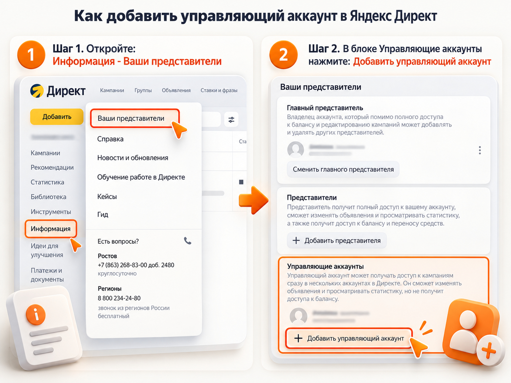

Блог о платном трафике
Как добавить управляющий аккаунт в Яндекс Директ
Чтобы добавить управляющий аккаунт в Яндекс Директ, откройте «Инструменты» → «Ваши представители», найдите раздел «Управляющие аккаунты» и нажмите «Добавить управляющий аккаунт». Укажите логин специалиста, выберите уровень доступа и отправьте приглашение. Специалист должен принять его в своём кабинете Директа.
Так можно предоставить директологу или подрядчику доступ к рекламным кампаниям без передачи пароля. Управляющий аккаунт позволяет редактировать рекламу, анализировать статистику и работать с несколькими клиентскими кабинетами. Конкретные возможности зависят от назначенных прав.
Что такое управляющий аккаунт в Яндекс Директе
Управляющий аккаунт Яндекс Директа - это отдельная учётная запись, которой предоставляют права на работу с рекламными кампаниями другого аккаунта.
В первую очередь этот инструмент подходит специалистам, которые ведут рекламу нескольких клиентов. Вместо постоянного переключения между разными логинами директолог использует свою учётную запись и выбирает нужный рекламный кабинет.
Для владельца бизнеса преимущества следующие:
- Не нужно передавать логин и пароль от основного аккаунта.
- Можно разрешить только просмотр статистики или полноценное редактирование рекламы.
- У управляющего аккаунта нет прав на оплату кампаний и пополнение рекламного счёта.
- Уровень доступа можно изменить или полностью отозвать.
Важное условие: управляющим можно назначить только прямой клиентский аккаунт, который уже используется в Директе и имеет роль главного представителя. Обычный аккаунт агентства или субклиента агентства для этой роли не подходит.
Как добавить управляющий аккаунт в Яндекс Директ
Для подключения потребуется логин специалиста, которому вы хотите предоставить доступ. Сама процедура состоит из четырёх шагов.
Шаг 1. Откройте раздел «Ваши представители»
Авторизуйтесь в рекламном кабинете Яндекс Директа, доступ к которому хотите предоставить.
В левом меню выберите «Инструменты», затем «Ваши представители».
На открывшейся странице находятся настройки представителей и управляющих аккаунтов. Вам потребуется отдельный блок для управляющих аккаунтов.
Если вы пользуетесь старой версией интерфейса, расположение отдельных пунктов может отличаться. В актуальной справке Яндекса указан путь через раздел «Инструменты».
Шаг 2. Нажмите «Добавить управляющий аккаунт»
Найдите блок «Управляющие аккаунты» и нажмите «Добавить управляющий аккаунт».
Не перепутайте эту кнопку с «Добавить представителя». Это разные способы предоставления доступа, у которых отличаются возможности и ограничения.

Шаг 3. Укажите логин и выберите права
В появившейся форме укажите логин специалиста, который уже работает в Яндекс Директе.
Затем выберите один из трёх уровней доступа:
- Чтение. Специалист сможет просматривать рекламные кампании и статистику, но не изменять настройки.
- Редактирование. Специалист сможет создавать кампании, менять объявления и оптимизировать рекламу.
- Администрирование. Помимо работы с рекламой, специалист сможет управлять представителями, другими управляющими аккаунтами и менять главного представителя.
Если подрядчик занимается настройкой и ведением рекламы, обычно достаточно уровня «Редактирование».
После выбора прав нажмите «Добавить». Яндекс отправит приглашение на указанный управляющий аккаунт.
Шаг 4. Специалист должен принять приглашение
Добавление управляющего аккаунта не означает, что специалист сразу получил доступ к рекламе.
Ему необходимо:
- Авторизоваться в Яндекс Директе под своим логином.
- Нажать на свой логин в левом меню.
- Найти поступившее приглашение на управление рекламным аккаунтом.
- Принять приглашение.
Специалист также может отклонить запрос.
После подтверждения клиентский кабинет станет доступен в меню управляющего аккаунта. Для переключения нужно нажать на свой логин и в блоке «Доступные аккаунты» выбрать нужный рекламный кабинет.
Под названием кабинета отображается назначенный уровень доступа.
Какие права есть у управляющего аккаунта
В Яндекс Директе предусмотрены три уровня доступа управляющего аккаунта: чтение, редактирование и администрирование.
Они отличаются тем, какие действия специалист может выполнять в рекламном кабинете.
| Возможность | Чтение | Редактирование | Администрирование |
|---|---|---|---|
| Просмотр настроек кампаний | Да | Да | Да |
| Просмотр статистики | Да | Да | Да |
| Работа с Мастером отчётов | Да | Да | Да |
| Создание рекламных кампаний | Нет | Да | Да |
| Редактирование объявлений | Нет | Да | Да |
| Добавление представителей | Нет | Нет | Да |
| Управление другими управляющими аккаунтами | Нет | Нет | Да |
| Смена главного представителя | Нет | Нет | Да |
| Оплата кампаний и пополнение баланса | Нет | Нет | Нет |
Для настройки и ведения рекламы подрядчику чаще всего достаточно уровня «Редактирование».
Администрирование следует выдавать осознанно. Хотя управляющий аккаунт не получает права оплачивать рекламу, этот уровень позволяет менять пользователей и их полномочия, включая главного представителя.
Для аудита рекламных кампаний и просмотра статистики достаточно уровня «Чтение».
Практическая рекомендация: предоставляйте специалисту минимальные права, необходимые для выполнения его задач. Если со временем потребуются дополнительные полномочия, уровень доступа можно изменить.
Чем управляющий аккаунт отличается от представителя
Управляющий аккаунт и представитель позволяют работать с рекламой без передачи основного пароля, но предназначены для разных задач.
| Критерий | Управляющий аккаунт | Представитель |
|---|---|---|
| Основное назначение | Работа с клиентскими кабинетами | Работа внутри одного рекламного аккаунта |
| Количество клиентских аккаунтов | До 50 | Один |
| Уровни доступа | Чтение, редактирование, администрирование | Только чтение, полный доступ |
| Возможность оплачивать рекламу | Нет | При полном доступе |
| Требования к логину | Уже используется в Директе, роль главного представителя | Новый для Директа логин Яндекса |
| Работа с несколькими клиентами | Из одного интерфейса | Отдельные представительские доступы |
Например, компания нанимает директолога, который одновременно ведёт рекламу нескольких клиентов. Для него управляющий аккаунт будет удобнее: он подключит кабинет компании к своему интерфейсу и сможет переключаться между проектами.
Если же нужно предоставить доступ отдельному сотруднику компании, может подойти обычный представитель.
Подробно этот способ разобран в статье «Как добавить представителя в Яндекс Директ».
Почему не получается добавить управляющий аккаунт
Если Яндекс Директ не позволяет добавить управляющий аккаунт или специалист не видит рекламный кабинет, проверьте следующие причины.
1. Указан неподходящий логин
Для управляющего аккаунта нужен действующий логин Яндекса, который уже используется в Директе.
Если у специалиста есть только обычная учётная запись Яндекса, но нет подходящего аккаунта Директа, назначить её управляющей не получится.
Уточните у специалиста, какой именно логин используется для работы с рекламой.
2. Аккаунт не является главным представителем
Яндекс разрешает назначать управляющими только прямые клиентские аккаунты с ролью главного представителя.
Если указанный логин является обычным представителем другого кабинета, он может не соответствовать условиям подключения.
Специалисту нужно проверить роль своего аккаунта.
3. Используется агентский аккаунт
Аккаунты рекламных агентств и их субклиентов нельзя назначать управляющими по этому механизму.
Для работы с агентскими аккаунтами в Директе предусмотрена отдельная система ролей и доступов.
4. Приглашение ещё не принято
После отправки приглашения специалист должен самостоятельно подтвердить подключение.
Если рекламный кабинет не появился в списке доступных аккаунтов, проверьте, поступил ли запрос и был ли он принят.
5. Достигнут лимит подключений
В Яндекс Директе действуют два ограничения:
- К одному рекламному аккаунту можно подключить не более 20 управляющих аккаунтов.
- Один управляющий аккаунт может получить доступ максимум к 50 рекламным аккаунтам.
Если лимит исчерпан, сначала потребуется освободить место, удалив ненужное подключение.
6. Недостаточно прав для добавления пользователя
Выдавать доступ должен пользователь с соответствующими административными полномочиями.
Если кнопка добавления недоступна, проверьте, под каким логином вы авторизованы и имеете ли право управлять доступами.
Как изменить права или удалить управляющий аккаунт
Если специалисту больше не нужен доступ или требуется изменить его полномочия, это можно сделать через настройки рекламного кабинета.
Порядок действий:
- Откройте «Инструменты» → «Ваши представители».
- Найдите раздел «Управляющие аккаунты».
- В списке найдите нужный логин.
- Откройте меню действий рядом с ним.
- Выберите изменение прав или «Удалить управляющий аккаунт».
После удаления управляющий аккаунт потеряет предоставленный доступ к рекламному кабинету.
Это удобно при завершении сотрудничества с подрядчиком. Рекламные кампании остаются в аккаунте заказчика, и менять основной пароль Яндекса не требуется.
Если сотрудничество продолжается, но специалисту больше не нужно управлять другими пользователями, вместо удаления можно понизить уровень доступа с «Администрирования» до «Редактирования».
Что ещё может делать управляющий аккаунт
Помимо редактирования кампаний, управляющий аккаунт позволяет анализировать рекламу сразу нескольких клиентов.
В Мастере отчётов Яндекс Директа можно выбрать доступные аккаунты и посмотреть статистику по ним.
Также предусмотрена группировка «Аккаунты», которая помогает разделять данные разных рекламодателей, например расходы на рекламу.
Это особенно полезно директологам, которые регулярно проверяют результаты нескольких проектов. Вместо отдельного входа в каждый кабинет можно работать с отчётами из одного управляющего аккаунта.
При этом возможность видеть рекламные расходы в статистике не означает, что специалист получает право пополнять счёт или проводить платежи.
Нужно ли отдельно давать доступ к Яндекс Метрике
Если директологу требуется работать не только с рекламными кампаниями, но и с полной статистикой сайта, права на счётчик Яндекс Метрики нужно проверить отдельно.
Для предоставления индивидуального доступа откройте в Метрике «Настройки» → «Доступ», добавьте логин специалиста и выберите подходящий уровень прав.
В Метрике предусмотрены разные режимы, включая просмотр, аналитику и редактирование.
При этом для оптимизации рекламных кампаний по целям необязательно предоставлять доступ ко всему счётчику. Яндекс позволяет использовать цели в Директе без полного доступа к статистике Метрики, если это разрешено настройками счётчика.
Подробнее о настройке прав написано в статье «Как дать доступ к Яндекс Метрике».
Коротко
Чтобы добавить управляющий аккаунт в Яндекс Директ, откройте «Инструменты» → «Ваши представители», нажмите «Добавить управляющий аккаунт», введите логин специалиста и назначьте права.
После этого специалисту необходимо принять приглашение в своём аккаунте Директа. Только после подтверждения он сможет открыть ваш рекламный кабинет через список доступных аккаунтов.
Для обычного ведения рекламы рекомендуется уровень «Редактирование». Он позволяет работать с кампаниями и статистикой, не предоставляя полномочий на управление другими пользователями.
Если сотрудничество заканчивается, управляющий аккаунт можно удалить через тот же раздел без передачи или смены основного пароля.